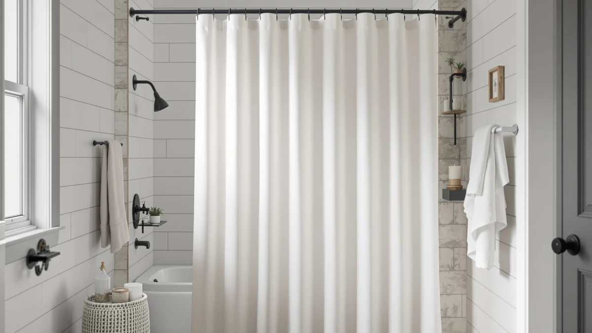

Shower Curtains vs Shower Doors: Which Is Better? (2026)
Prices and picks verified as of September 2026. Independent, reader-supported reviews.


Things to Know Before You Buy
- A shower curtain and liner cost $10 to $30 and install in under ten minutes with no tools.
- Glass shower doors run from about $150 for a basic sliding kit to $1,200 or more for a custom frameless enclosure, plus installation.
- Curtains fit almost any tub or shower opening, including angled walls and corner stalls where a rigid door cannot seal properly.
- Doors keep more water off the bathroom floor and give mildew less fabric to grow on, but they need regular squeegee use to stay streak-free.
- Renters generally lean toward curtains since they leave no permanent hardware behind at move-out.
The shower curtains vs shower doors decision comes down to three factors: your budget, your bathroom layout, and how much cleaning you want to take on each week. A curtain costs a fraction of what a door costs and adapts to almost any tub or stall, while a door gives you a cleaner look and traps less moisture in fabric over the long run. Neither option wins across the board. The right pick depends on whether you rent or own, how much time you want to spend on upkeep, and what your bathroom can physically accommodate.
We compared pricing, installation requirements, and verified owner reviews across both categories to see where each one holds up and where it falls short. The breakdown below covers cost, durability, cleaning effort, and everyday use, along with a set of curtain picks if that turns out to be the better fit for your bathroom.
Quick Answer
If you plan to stay put and want a permanent, low-mildew setup, a shower door wins on long-term durability and cleanliness. If cost and flexibility matter more, a curtain is the better call: it installs without tools and fits tubs, corner stalls, and odd angles that a rigid door cannot seal. Need the cheaper, faster option today? A curtain like the Amazon Basics Bathroom Shower Curtain gets the job done. Planning to stay in the home for years? A shower door pays off over time.
What is Shower Curtains?
A shower curtain is a fabric or vinyl panel that hangs from rings or hooks on a rod above the tub or shower opening. Most setups pair a decorative outer curtain with a separate waterproof liner made of PEVA, vinyl, or a mildew-resistant polyester blend, though hookless and liner-free curtains have grown more common as fabric technology has improved. The rod can be a straight bar, a curved bar that adds elbow room, or a tension rod that requires no drilling.
Curtains dominate the US bathroom market because they solve the shower curtains vs shower doors tradeoff in the simplest way possible: low upfront cost and near-universal fit. A single curtain panel typically measures 70 or 71 inches wide, with extra-wide and extra-long sizes available for walk-in showers and stalls with taller ceilings. Weighted hems and magnetic strips at the bottom edge help keep the curtain from billowing into the shower spray, which fixes one of the more common owner complaints.
Because curtains are fabric or thin plastic, they need periodic replacement. A liner used daily typically lasts six months to a year before mildew or soap scum buildup becomes hard to reverse in the wash, while a heavier decorative outer curtain can last several years with regular laundering.
What is Shower Doors?
A shower door is a rigid glass or acrylic panel mounted on metal tracks or hinges that seals the shower opening. The three common styles are sliding doors, which glide on an upper and lower track and suit standard tub-shower combos, pivot or hinged doors, which swing open like a regular door and need floor clearance, and frameless enclosures, which use thick tempered glass with minimal metal hardware for a more upscale look.
Installation usually requires precise measurements and, in most cases, a professional, since the door has to seal against tile or a fiberglass surround without leaking. Glass thickness ranges from about 1/4 inch for framed and semi-frameless doors up to 3/8 or 1/2 inch for frameless models, and thicker glass generally means a sturdier door and a higher price. Most doors come with a factory coating that resists hard water spots, though that coating wears down over years of exposure and needs periodic reapplication with a dedicated glass treatment.
Doors also raise the stakes on fit. A door ordered for the wrong opening width or an out-of-square tub can leak at the seams, which is a risk curtains simply do not carry.
Head-to-Head: Build Quality & Durability
In the shower curtains vs shower doors durability comparison, glass doors last longer as a structure. Tempered glass and metal hardware can hold up for ten to twenty years with basic maintenance, while even a well-made fabric curtain typically gets replaced every two to four years as fading, thinning, or persistent mildew stains set in. Liners wear out faster still, since they take the most direct water contact.
That durability comes with its own failure points. Door tracks and rollers accumulate mineral deposits from hard water and can start sticking or grinding within a few years if they are not cleaned regularly. Silicone seals along the door edges and the bottom sweep also degrade and need replacement roughly every three to five years to keep the door watertight. A curtain has no moving hardware to fail, so its main durability risk is fabric or liner breakdown, not mechanical wear.
Owners in humid climates report that fiberglass or acrylic shower bases paired with glass doors show water spotting faster than tile, which adds another maintenance variable that curtain users do not deal with.
Head-to-Head: Price & Value
Price is where the shower curtains vs shower doors gap is widest. A curtain and liner combination costs $10 to $30 and needs no professional installation, so the entire project is done in the time it takes to hang two rods worth of rings. A basic sliding glass door kit starts around $150 to $300 installed, while a semi-frameless or fully frameless enclosure runs $600 to $1,200 or more once you add professional installation, custom glass cuts, and hardware finishes that match your fixtures.
Over five years, a curtain user might spend $50 to $100 replacing liners and panels as they wear out, while a door owner spends closer to $0 in replacement parts but carries the full upfront cost from day one. For renters or anyone on a tight budget, the curtain's low entry price is hard to beat. For a homeowner planning to stay long-term, the door's higher upfront cost can make sense as a durable, one-time investment.
Head-to-Head: Use Experience
Day-to-day, the shower curtains vs shower doors experience differs most in cleaning and space. A curtain requires periodic hand-washing or a machine cycle, and liners need replacing when mildew sets in or the vinyl starts to yellow. A glass door needs a quick squeegee pass after each use to prevent hard water spots and soap scum, which takes fifteen seconds if you build the habit, though skipping it for a week or two lets residue harden and become much harder to remove.
Curtains also billow inward with the water spray unless you use a weighted hem or curved rod, something owners frequently mention as an early annoyance until they add a fix. Doors do not billow, but a pivot or hinged door needs floor clearance to swing open, which can crowd a small bathroom. Sliding doors avoid that problem but only ever leave half the opening accessible at a time, which some owners find tighter for reaching the far end of a tub.
Ventilation is another factor. A curtain typically allows more airflow around the edges, which some owners say helps a small, poorly ventilated bathroom dry out faster between showers. A sealed glass door traps humidity inside the enclosure until you open it, which can extend drying time on tile grout in a stall shower.
When to Choose Shower Curtains
Pick a shower curtain if you rent, plan to move within a few years, or want to update your bathroom's look seasonally without a major purchase. Curtains also make sense for irregular tub shapes, clawfoot tubs, and stalls with curved or angled walls, since a rigid door often cannot be custom-fit to those spaces without significant added cost. If your budget caps out under $50 for the whole project, a curtain and liner combination is the only realistic option.
Families with young kids also tend to prefer curtains, since fabric poses less injury risk than glass and a curtain does not need childproofing against a heavy door swinging shut on small fingers.
When to Choose Shower Doors
Pick a shower door if you own your home, plan to stay for several years, and want to minimize the mildew and fabric replacement cycle that comes with curtains. A door also suits households that shower multiple times a day, since the reduced water splash on the floor cuts down on slip risk and floor damage over time. If you are already renovating a bathroom and adding tile or a new shower base, folding a glass door into that project usually costs less than retrofitting one later.
A frameless door in particular tends to appeal to anyone who cares about resale value, since real estate listings and buyers commonly treat a glass enclosure as a visible bathroom upgrade over a curtain and rod.
Our Top Picks
If the shower curtains vs shower doors comparison above points you toward a curtain, these three verified picks cover the budget, value, and style angles most buyers ask about.

Editor’s Pick
Amazon Basics Bathroom Shower Curtain
The lowest-cost route into a reliable curtain and liner setup, backed by tens of thousands of verified reviews.
$9.98
Check Price on Amazon
Best Value
Barossa Design Shower Curtain Liner
A weighted-hem liner that owners credit with staying put and resisting mildew longer than typical liners.
$9.99
Check Price on Amazon
Premium Choice
AmazerBath Boho Shower Curtain Modern
A patterned option for buyers who want their shower curtain to double as a design statement in the bathroom.
$19.99
Check Price on AmazonFrequently Asked Questions
Are shower doors better than shower curtains?
Neither wins outright. In the shower curtains vs shower doors debate, doors give you a cleaner look and less mildew buildup over time, while curtains cost far less, install in minutes, and work in almost any bathroom layout, including tubs and awkward alcoves.
Do shower doors leak water more than curtains?
A properly installed frameless or semi-frameless door seals tightly and rarely leaks. A shower curtain without a weighted hem or a liner that does not reach the tub can let water splash onto the floor, so the leak risk depends more on setup than on which category you choose.
Which is cheaper, a shower curtain or a shower door?
A shower curtain and liner typically run $10 to $30 and needs no installation. A glass shower door runs anywhere from $150 for a basic sliding kit to $1,200 or more for a custom frameless enclosure, plus professional installation in most cases.
Are shower curtains harder to keep clean than shower doors?
Fabric curtains and liners collect soap scum and mildew faster and need regular washing or liner swaps. Glass doors show water spots and streaks quickly but wipe clean with a squeegee in seconds, so doors generally demand less effort once you build the habit.
Can I switch from a shower curtain to a shower door later?
Yes, in most cases. Sliding and pivot doors can be added to an existing tub or shower base without major plumbing changes, though a frameless enclosure may require a professional to check that your walls and base can support the hardware.
Final Verdict
The shower curtains vs shower doors choice ultimately tracks your living situation more than either product's quality. Renters, budget-conscious buyers, and anyone with an irregular tub or stall get the better outcome from a curtain, and the Amazon Basics Bathroom Shower Curtain covers that need at the lowest realistic cost. Homeowners staying put for years, who care about long-term durability and resale value, get more out of a glass door despite the higher upfront price and installation hassle.